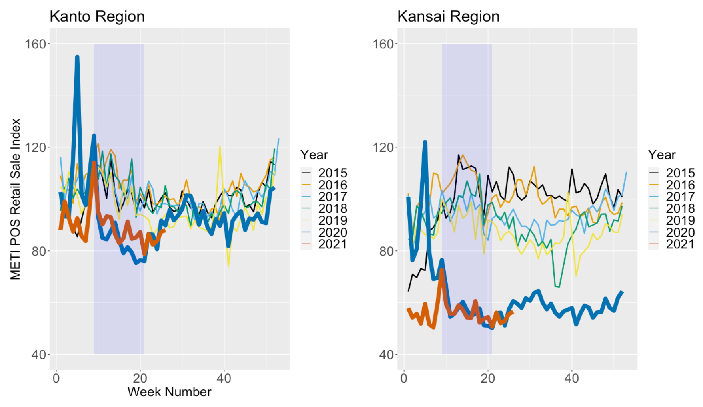

COVID19 reveals hidden inbound consumption?
04/15 2022
Author: Masashi Yamamoto
The figure below is a plot of the " METI POS Retail Sales Index" published by the Ministry of Economy, Trade and Industry. The horizontal axis is the week and the vertical axis is the sales index of heathcare products at drugstores where the level of 2015 set equal to 100. The shading indicates the period of the first emergency declaration in Japan. The thick blue and red lines show the indexes for 2020 and 2021, and the other colorful lines show the trend from 2015 to 2019.

It can be seen that sales dropped significantly after the declaration in both plots. Then sales in the Kanto region recovered at least in 2020, while sales in the Kansai region remained sluggish. Why do only drugstores in Kansai continue to decline?
I interviewed several people in the industry, and I have come to the conclusion that this is due to the impact of inbound tourism. For inbound travelers, it is popular to enter Japan from airports near Tokyo and then visit Mt. Fuji, Kyoto, and Osaka respectively. One of the purposes of the trip for Asian travellers coming to Japan is to purchase health care products made in Japanese. Before COVID, the purchase tended to be done at Kansai, the last stop along the route, but now it has all gone.
It seems that inbound tourism is affecting more to the Japanese economy than I thought.